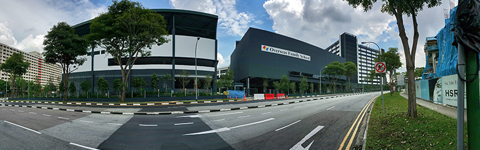

오버시즈 패밀리 스쿨 파시르리스 캠퍼스 · 사진: Hendryc ong / Wikimedia Commons, CC BY-SA 4.0
오버시즈 패밀리 스쿨(Overseas Family School, OFS) — 커리큘럼을 세 번 갈아타는 학교
1. 오버시즈 패밀리 스쿨은 어떤 학교인가
· 설립 — 1991년 설립으로 알려져 있습니다.
· 캠퍼스 — 싱가포르 동쪽 파시르리스(Pasir Ris). 2015년에 현재 캠퍼스로 옮긴 것으로 알려져 있습니다.
· 학년 — 유아 과정부터 G12까지 한 캠퍼스에서 이어지는 통학형 남녀공학으로 알려져 있습니다.
· 구성 — 70여 개국 학생이 다니는 다국적 구성으로 알려져 있습니다. 특정 나라 학생이 압도적으로 많지 않은 편이라는 점이 학교의 설명입니다.
· 교육과정 — 유아 IEYC → 초등 IPC(국제초등커리큘럼) → 중등 IB MYP(G9~10에는 IGCSE 과목 병행) → 고등 IB 디플로마로 알려져 있습니다.
학년별로 정리하면 이렇습니다.
| 학년 | 과정 | 공부가 요구하는 것 |
|---|---|---|
| 유아(Pre-K~K) | IEYC | 놀이·탐구로 영어에 익숙해지기 |
| G1~G5 | IPC(국제초등커리큘럼) | 주제 단원 탐구 · 영어로 설명하고 발표 |
| G6~G8 | IB MYP | 기준표(루브릭) 채점 · 수학 서술 · 장기 과제 |
| G9~G10 | MYP 틀 안에서 IGCSE 과목 병행 | 외부 시험 형식 · 배점에 맞춘 답안 |
| G11~G12 | IB 디플로마(DP) | 6과목(HL·SL) + Core(EE·TOK·CAS) |
※ 개설 과목·학년 구분·모집 일정은 바뀔 수 있습니다. 학교 요강을 직접 확인하세요. 학비·정원·합격률 등 변동 수치는 이 글에서 다루지 않습니다.
2. 싱가포르의 다른 학교와 무엇이 다른가
싱가포르에서 한국 가정이 자주 비교하는 학교들과 고등 과정을 기준으로 놓고 보면 성격이 갈립니다.
· 싱가포르 아메리칸 스쿨 — 미국식, AP·IB를 함께 운영하는 것으로 알려진 대규모 학교.
· UWCSEA — G9~10 IGCSE → G11~12 IB의 2단 구조.
· 탕린 트러스트 스쿨 — 영국식 계열.
· 오버시즈 패밀리 스쿨 — IPC → MYP(+IGCSE) → DP. 초등부터 국제 커리큘럼으로 쭉 이어지고, 중등에서 IB 틀 안에 IGCSE가 얹히는 형태로 알려져 있습니다.
정리하면, "미국식이냐 영국식이냐"보다 국제 커리큘럼 한 줄로 12년을 간다는 점이 이 학교의 성격입니다. 아이가 이미 IB 계열 학교를 다녔다면 연결이 매끄럽고, 한국 학교나 미국식 학교에서 넘어오면 평가 방식부터 새로 배워야 합니다.
3. 한국(주재원) 학생이 겪는 어려움
· 초등(IPC)에서는 "쓰기와 말하기"가 성적이다. 주제 단원마다 조사하고 영어로 설명·발표합니다. 계산과 암기는 잘하는데 발표에서 조용한 아이는 실제 실력보다 낮게 평가받기 쉽습니다.
· G6 MYP 전환이 첫 번째 고비. 정답이 아니라 기준표(루브릭) 충족으로 점수가 매겨집니다. 무엇을 어떻게 써야 점수가 되는지 모르면 열심히 해도 점수가 안 오릅니다.
· G9~10에서 시험 형식이 하나 더 붙는다. MYP 방식으로 지내다 IGCSE 외부 시험 형식(배점에 맞춘 분량·근거 개수)에 맞춰 답안을 써야 합니다.
· DP가 열려 있다는 것의 다른 얼굴. 도전할 기회가 넓은 만큼, 준비가 덜 된 상태로 6과목 + Core에 들어가면 G11 1학기에 바로 부담이 옵니다. 학교가 막아주기를 기대하기보다 가정이 먼저 점검해야 합니다.
· 영어로 된 수학. 알지브라 용어가 영어이고, 서술형에서 풀이 과정을 영어 문장으로 써야 합니다.
4. 그래서 이렇게 준비합니다
📖 영어과외 — 설명하는 글에서 논증하는 글로
초등(IPC) 시기에는 읽은 것을 자기 말로 다시 설명하는 훈련이 핵심입니다. 중등(MYP)부터는 주장 → 근거 → 분석 → 연결의 뼈대를 잡고 기준표 항목에 맞춰 첨삭하며, G9~10에는 IGCSE 배점에 맞춘 답안 형식을 따로 연습합니다. (영어 공부법 참고)
📐 수학과외 — 알지브라 + 서술형 풀이
알지브라·지오메트리 개념을 영어 용어로 연결하고, show your work를 영어로 적는 습관을 들입니다. MYP 서술 채점과 IGCSE의 단계별 점수를 함께 잡아두면 DP 수학(AA/AI)으로 그대로 이어집니다. (알지브라 공부법·IB DP 점수 참고)
🗺️ 편입 시기별 우선순위
· 초등 편입 — 읽기 레벨과 말하기. 수업 참여가 곧 평가입니다.
· G6~G8 편입 — 기준표 읽는 법부터. 과제 하나를 끝까지 같이 만들어 보면 감이 옵니다.
· G9~G10 편입 — IGCSE 과목 선택이 2년 뒤 DP HL·SL로 이어지므로 진로를 함께 봅니다. → IGCSE 과목 선택
· G11 편입 — 가장 부담이 큰 시기입니다. DP 과목 설계와 Core 일정부터 잡고 시작하세요. → 입학 준비 총정리
5. 싱가포르의 강점 — 시차 1시간 화상과외
싱가포르는 한국과 시차가 1시간이라 방과 후 화상 1:1 수업을 붙이기 좋습니다. 현지 학원은 대부분 현지 시험(로컬 커리큘럼)에 맞춰져 있어, IB·IGCSE 과제를 한국어로 짚어 줄 곳을 찾기가 쉽지 않습니다. 아이의 실제 과제와 채점 기준표를 화면에 놓고 보는 방식이 가장 빠릅니다. 싱가포르 전반 안내는 싱가포르 국제학교 과외·싱가포르 학원과 1:1 과외 비교에 정리했습니다.
정리
오버시즈 패밀리 스쿨은 IPC → MYP(+IGCSE) → IB 디플로마로 커리큘럼이 세 번 바뀌는 구조로 알려진 싱가포르 국제학교입니다. ① 초등은 말하기·쓰기, ② G6은 기준표 채점, ③ G9~10은 IGCSE 답안 형식, ④ G11은 DP 과목 설계 — 넘어가는 지점마다 요구가 달라집니다. 30분 무료 상담으로 우리 아이가 지금 어느 단계에 있는지부터 점검해 보세요.